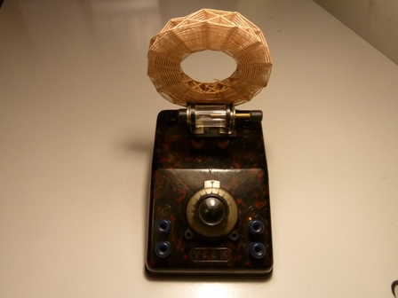
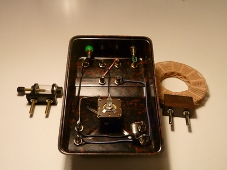
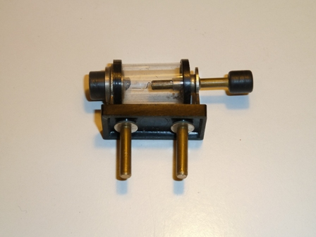
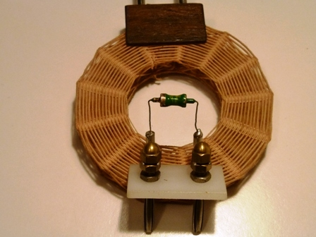

Non è vero che ho proprio distrutto totalmente la storica radio a galena di mio padre fatta negli anni di guerra: ne ho ancora i pezzi fondamentali e volendo la potrei addirittura ricostruire quasi come in origine.
Può darsi che lo faccia, prima o poi, chissà.
Alcuni anni fa ho ne fatto un'altra, di forme e circuito classici, sfruttando gli antichi stampi VAAM in bakelite che una ditta aveva riproposto secondo il modello originale del tempo di guerra; in Internet se ne vedono di quasi identiche, mentre mio padre aveva proprio gli originali.
Eccola in tutta la sua semplicità, fuori e dentro.


Non mi addentro volutamente in nessun particolare tecnico, ne ho già discusso anche troppo nella scorsa presentazione.

L'elemento chiave di questa radio è il detector a galena, che si vede nella foto; il cristallo di PbS sta a sinistra, nel tubetto di vetro, ed è sfiorato da un filetto di acciaio detto "baffo di gatto", col quale si cerca difficoltosamente, manovrando la manopolina a destra, di individuare il punto più sensibile del cristallo, dove esso si comporta da semiconduttore.
Dagli anni '50 in poi la galena è stata sostituita da un diodo al germanio, molto più sensibile e stabile e che non abbisogna di regolazioni; la foto mostra anche uno di questi vecchissimi diodi inserito su uno spinotto che può prendere il posto della galena.La cuffia deve essere ad alta impedenza, nel mio caso è anch'essa vintage e da 4000 ohm.
Cosa si sente con questa radio?
Mi arrabbio solo a pensarlo... ma ormai da un po' di anni una dissennata politica di gestione del servizio radiofonico pubblico ha praticamente distrutto o gravemente ridimensionato tutto il patrimonio dei numerosi trasmettitori in ampiezza modulata (la vecchia AM) che l'azienda aveva da sempre in Italia e che consentiva l'agevole ascolto dei programmi in onde medie praticamente in tutto il territorio nazionale e di sera/notte in tutta Europa.
Sono stati disattivati anche tutti i trasmettitori in onde corte, che portavano la voce dell'Italia in tutto il mondo.
Con le vecchie onde medie ed i ripetitori locali si potevano ascoltare tutti i tre canali del servizio pubblico (!) anche nella località più sperduta di tutto il territorio nazionale e ben oltre.
E' vero che i servizi radio (in OM e OC) sono stati fortemente ridimensionati per motivi economici da quasi tutti i principali paesi, ma tra ridimensionare un servizio pubblico e distruggerlo la differenza è abissale.
Ecco perchè ora non si ascolta praticamente niente con un ricevitore AM come la radio a galena (ma nemmeno con una radio normale in questa gamma, a meno di non essere vicino a uno dei pochi trasmettitori sopravvissuti all'ecatombe); di sera, quando la propagazione radio aumenta, si ascoltano stazioni estere anche lontane.
La selettività (capacità di separare le stazioni una dall'altra) è comunque molto scarsa e altrettanto dicasi per la sensibilità: ma ricordiamo che questo ricevitore funziona con i componenti che ci stanno nelle dita di una mano, e ciascun componente è a bassissima tecnologia!
Tutto sufficiente, nel 1944, per sentire ogni sera le famose quattro note della quinta sinfonia di Beethoven, che suonano esattamente come la lettera V telegrafica del Morse, DI-DI-DI-DAAA... la famosa V di Victory.